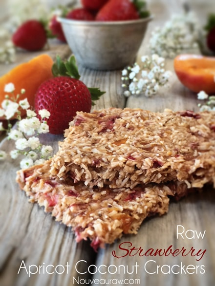

Strawberry Apricot Coconut Crackers

~ raw, vegan, gluten-free, nut-free ~
The naturalness of this cracker astounds me. And if I am astounded, you should be too, because after all, aren’t we just one big happy family? I dunno… anyway that’s my theory and I am sticking to it.
I find it very important to explain the textures and flavors of the recipes that I share with you. Without that valuable information, how would you know what you are aiming for or what to expect?!
First of all, this cracker is very crunchy, almost an air-like texture. We can thank the shredded coconut for pulling its weight in that department. I also used fresh fruit instead of dried fruit. As the natural water content in the fresh fruits dried, it helped this cracker achieve that wonderful cracker texture that we all know and crave.
Flavor-wise, well the title of this recipe pretty much sums it up. It is a combination of sweet, summer-kissed strawberries, teamed up with the delicately smooth flavor of apricots, all intertwined with the tropical paradise taste of coconut. Sounds pretty good, doesn’t it?
If you happen to stumble upon this recipe in the off-season of fresh strawberries and apricots, don’t be afraid to look in the freezer section of the grocery store. Do your best to purchase organic only, whether fresh or frozen. These two fruits are on the Dirty Dozen list (apricots are right there with peaches). It is our goal to feed our bodies the best possible ingredients.
I really want to encourage you to try these crackers. They hold up beautifully as a pantry staple. Perfect for school lunchboxes, after-school snacking, or pretty much any time of the day or occasion. For fun, I created Strawberries n’ Cream Fruit Dip for these crackers. I want to say that it isn’t needed because it really isn’t… it’s just always doubly delicious to slather a little extra yumminess into the whole experience. Enjoy and please let me know if you give them a try!
Yields 1 (12×12) dehydrator tray
- 2 ripe bananas
- 2 Tbsp raw agave (optional)
- Pinch Himalayan pink salt
- 3 cups (269 g) shredded coconut
- 2 cups (300 g) organic strawberries
- 4 apricots (240 g or 1 3/4 cups diced)
Preparation:
- Blend the bananas, sweetener (if used), and salt in a food processor, fitted with the “S” blade, until creamy.
- Add shredded coconut and process till mixed.
- Add the strawberries and apricots, pulse to blend them in, leaving small bits in the batter.
- Line the dehydrator tray with a non-stick teflex sheet.
- Spread the batter from edge to edge.
- Make sure that you spread it evenly so it dries evenly.
- Wipe the edges clean.
- Score the crackers into desired shapes and sizes. You can use a pizza cutter or a long metal ruler to create the score marks.
- Dehydrate at 145 degrees (F) for 1 hour, then reduce to 115 degrees (F) and continue drying for 10+ hours… until dry and crispy.
- Snap apart and let cool before storing, store in an airtight bag/container.
- They should last several weeks in the pantry and can be frozen for 1-2 months. If they start to soften due to humidity, throw them back in the dehydrator to crisp up.
Culinary Explanations:
- Why do I start the dehydrator at 145 degrees (F)? Click (here) to learn the reason behind this.
- When working with fresh ingredients it is important to taste test as you build a recipe. Learn why (here).
- Don’t own a dehydrator? Learn how to use your oven (here). I do however truly believe that it is a worthwhile investment. Click (here) to learn what I use.
© AmieSue.com